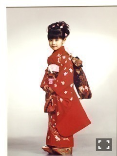
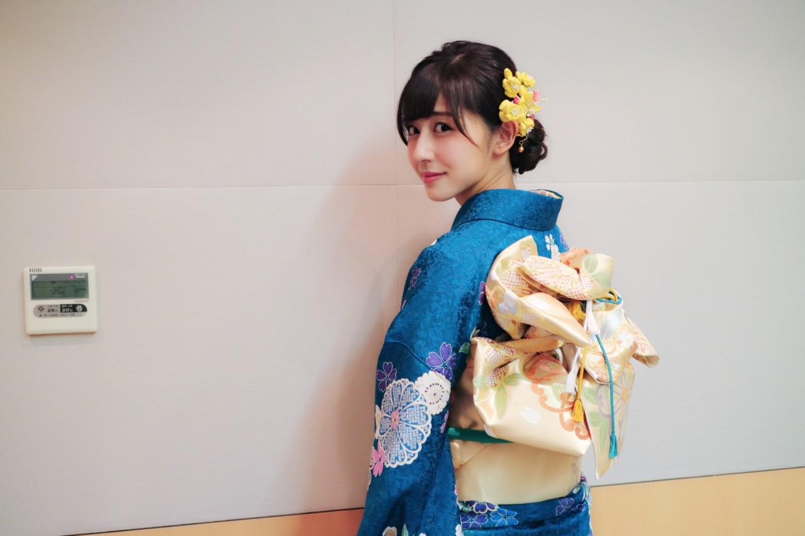
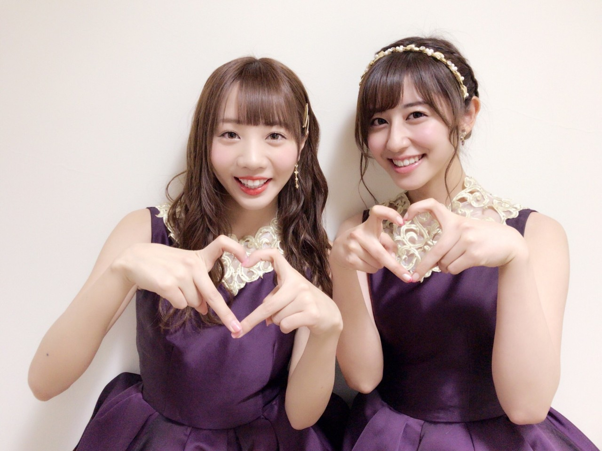

| 2017/01 10 Tue | 13年前。 |
ちはるーむへようこそ。
昔のフォルダを漁っていたら
こんな昔の写真が残っていました！

七五三の時の写真です。
私がまだ7歳のとき...！
それから約13年。

こうして比べてみると大人になった...かな？♪
---------------------------------------♡
！ChihAnswer！
 ぺんさん
ぺんさん
・成人を迎えて大人になったのであだ名を「ちーちゃん」から変えたい？
→それは全く思わない！！
ちーちゃんと呼びたいと父が思って
ちはるという名前に繋がったので、
私は一生ちーちゃんがいい◎
ゆきさん
・自分が大人になったなって思った瞬間はどこですか？
→今までは楽屋のお弁当が
お肉かお魚で分かれていたら、
必ずと言っていいほどお肉派だったのに
最近はお魚の方が好きになってきた！
銀だら弁当が1番好き...。
お魚の美味しさが分かるようになってきたら
大人になってきたのかな〜と思います◎
友梨さん
・96年組でのユニットの話が出ていましたが、中3組でのユニット組みたいですか？組んだらどんな曲が歌いたいですか？
→もちろん組みたいです！
実は何年も前から願っているんだけど...
なかなか機会がなくて(> <)
3人だけでの雑誌のグラビアも実はないの...！
いつかやりたいな〜とは思ってます。
ユニットを組んだら、
昔ながらの歌謡曲みたいな歌が歌いたいかも。
3人とも昭和の曲が好きなので◎
なれおさん
・今年一番最初に食べたものは？
→紅白の差し入れで頂いた、
タマゴサンド！
今流行りの、厚焼き玉子サンドと言うのかな？
それを帰りの車で食べました◎
お腹が空いてたのでばくばく食べたら
食べ終わる頃には食べ過ぎて
少しうっぷす...ってなっちゃった(> <)笑
加減が出来る大人になれますように。。
ビオラさん
・実際に二十歳になるまでに、やっておきたいことはありますか？
→その質問沢山されるのですが...
何も思いつかない〜(> <)！
10代ならではってなんだろう？
逆にみなさんに質問したいな◎
二十歳まであと1ヶ月ちょっとで、
やっておいた方がいいって事ありますか？
今日は短めですが...ここまで。
皆さん質問ありがとうございました\( ˆ ˆ )/
またお待ちしています！
-----------------------------------♡
♬ ChihaMusic
「明日はきっといい日になる」高橋優さん
元気が出ない日でも
涙が出そうになる日でも
この曲を聴くと明日も頑張ろうって
思える、本当素敵な曲！
A、Bメロの日常的な情景を
歌詞にしているのも
親近感が湧いて、より良い...
特にラスサビが好きです。
"笑いあえたならいい日になる
いい日になる いい日になるのさ
今日よりずっといい日になる
いい日になる いい日にするのさ"
やっぱり笑うことって大切だよね。
笑顔を忘れずに！！
もうテストが始まる時期です...
ぬくぬく冬休みが終わったと思ったら
すぐにテスト(> <)
テスト期間の皆さん、一緒に頑張りましょう。
そして受験生の皆さんも
ラストスパートの時期ですよね...！
皆さん本当に頑張ってください。
心から応援しています( ･̀･́ )

らぶパワー♡
おやすみ
斎藤ちはる
コメント(251)
2017/01/10 23:36